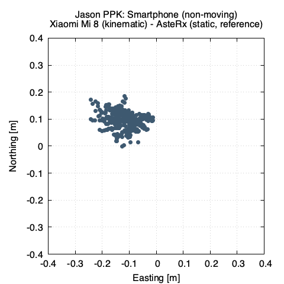

Accuracy analysis
This section includes an accuracy analysis we have performed with Jason for you to have an idea of which accuracy you can obtain with the service
GNSS geodetic-grade receiver (static)
The purpose of this test was to assess the accuracy that can be achieved using a geodetic grade GNSS receiver and antenna in static mode (non moving platform).
| Test setup | Rover receiver | Base station |
|---|---|---|
| GNSS receiver | Septentrio AsteRx | Leica GR50 |
| Antenna | Septentrio PolaNT | Leica AR25 |
| Environment | Rooftop, open sky | open sky |
| Data length | 2.34 hours | 24 hours |
| Sampling rate | 15 second | 30 second |
| Number of epochs | 560 | 2880 |
| GPS start time | 2019 Nov 18 12:45:30.000 | 2019 Nov 18 00:00:00.000 |
| GPS end time | 2019 Nov 18 15:05:15.000 | 2019 Nov 18 23:59:30.000 |
The test setup (performed at the rooftop of Rokubun's headquarter offices at the MediaTIC building) is shown in the following picture:

The Septentrio AsteRx data has been processed with Jason with the following main characteristics:
| Processing characteristics | |
|---|---|
| Strategy | Post-Processing Kinematic (PPK) |
| Dynamics | static |
| Reference station | ICGC PLAN (17.4km baseline) |
In order to assess the results, the same data file (converter to RINEX) has been processed using Canadian Geodetic Survey of Natural Resources Canada Precise Point Positioning (PPP-AR) tool. The differences are shown in the table below:
| component | NRCAN PPP (final products) | Jason PPK | difference (vs NRCAN) |
|---|---|---|---|
| UTM_X (m) | 432640.419 | 432640.414 | -0.005 |
| UTM_Y (m) | 4583770.355 | 4583770.352 | -0.003 |
| ellipsoid (m) | 92.638 | 92.561 | -0.077* |
*Please note that we are currently working on fix for JASON so that the antenna models are properly taken in to account, this is expected to substantially close the gap between the NRCAN PPP solution and the JASON PPK.
Smartphone (non-moving dynamic)
This test intends to provide an estimate accuracy of the best accuracy that can be achieved with a smartphone in the most benign environment possible (non moving, open sky)
| Test setup | |
|---|---|
| GNSS receiver | Xiaomi Mi 8 |
| Antenna | internal |
| Environment | Rooftop, open sky |
| Data length | 7 minutes |
| Sampling rate | 1 second |
| Local time | 2019 Nov 19 12:17 |
The smartphone was colocated on the same point at which the antenna of the static test. The data was then processed with Jason with the following processing strategy:
| Processing characteristics | |
|---|---|
| Strategy | Post-Processing Kinematic (PPK) |
| Dynamics | Smartphone was not moving, but processed with kinematic stochastics |
| Reference station | IGN BCLN (16km baseline) |
